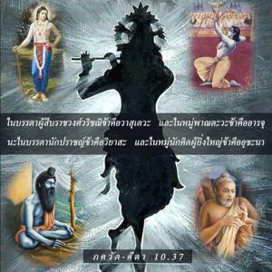
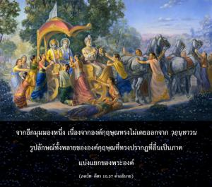
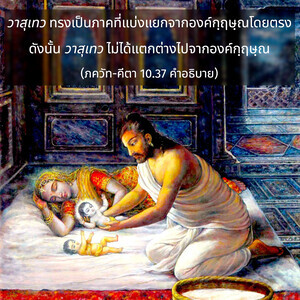
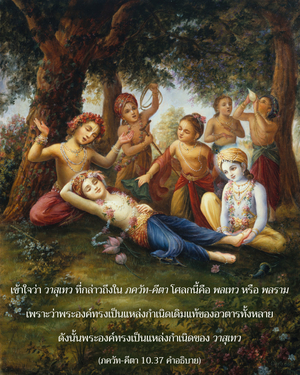

ในบรรดาผู้สืบราชวงศ์ วฺฤษฺณิ ข้าคือ วาสุเทว และในหมู่ ปาณฺฑว ข้าคือ อรฺชุน ในบรรดานักปราชญ์ข้าคือ วฺยาส และในหมู่นักคิดผู้ยิ่งใหญ่ข้าคือ อุศนา




องค์กฺฤษฺณทรงเป็น ภควานฺ องค์แรก และ พลเทว ทรงเป็นภาคที่แบ่งแยกจากองค์กฺฤษฺณโดยตรง ทั้งองค์กฺฤษฺณ และ พลเทว ทรงปรากฏเป็นบุตรของ วสุเทว ดังนั้น ทั้งคู่อาจถูกเรียกว่า วาสุเทว จากอีกมุมมองหนึ่ง เนื่องจากองค์กฺฤษฺณทรงไม่เคยออกจาก วฺฤนฺทาวน รูปลักษณ์ทั้งหลายขององค์กฺฤษฺณที่ทรงปรากฏที่อื่นเป็นภาคแบ่งแยกของพระองค์ วาสุเทว ทรงเป็นภาคที่แบ่งแยกจากองค์กฺฤษฺณโดยตรงดังนั้น วาสุเทว ไม่ได้แตกต่างไปจากองค์กฺฤษฺณ เข้าใจว่า วาสุเทว ที่กล่าวถึงใน ภควัท-คีตา โศลกนี้คือ พลเทว หรือ พลราม เพราะว่าพระองค์ทรงเป็นแหล่งกำเนิดเดิมแท้ของอวตารทั้งหลาย ดังนั้น พระองค์ทรงเป็นแหล่งกำเนิดของ วาสุเทว แต่ผู้เดียว ภาคที่แบ่งแยกจากองค์ภควานฺโดยตรงเรียกว่า สฺวำศ (ภาคที่แบ่งแยกส่วนพระองค์) และยังมีภาคที่แบ่งแยก เรียกว่า วิภินฺนำศ (ภาคแบ่งแยกที่แยกออกไป)
ในบรรดาโอรสของ ปาณฺฑุ นั้น อรฺชุน ทรงมีชื่อเสียง ในนาม ธนญฺชย และเป็นผู้ที่ดีที่สุดในหมู่มนุษย์ ดังนั้น จึงเป็นผู้แทนขององค์กฺฤษฺณในหมู่ มุนิ หรือผู้คงแก่เรียนเชี่ยวชาญในความรู้พระเวท วฺยาส ยิ่งใหญ่ที่สุด เนื่องจากทรงอธิบายความรู้พระเวทในหลายวิธีเพื่อให้คนธรรมดาสามัญส่วนใหญ่ใน กลิ ยุคนี้สามารถเข้าใจได้ และเป็นที่ทราบกันว่า วฺยาส เป็นอวตารขององค์กฺฤษฺณ ดังนั้น วฺยาส เป็นผู้แทนองค์กฺฤษฺณ กวิ คือพวกที่สามารถคิดได้ทะลุปรุโปร่งในทุกๆ เรื่อง ในบรรดา กวิ อุศนา ศุกฺราจารฺย เป็นพระอาจารย์ทิพย์ของเหล่ามาร ท่านเป็นผู้ที่มีความเฉลียวฉลาดมาก และเป็นนักการเมืองที่มีวิสัยทัศน์กว้างไกล จึงเป็นผู้แทนอีกท่านหนึ่งแห่งความมั่งคั่งขององค์กฺฤษฺณ